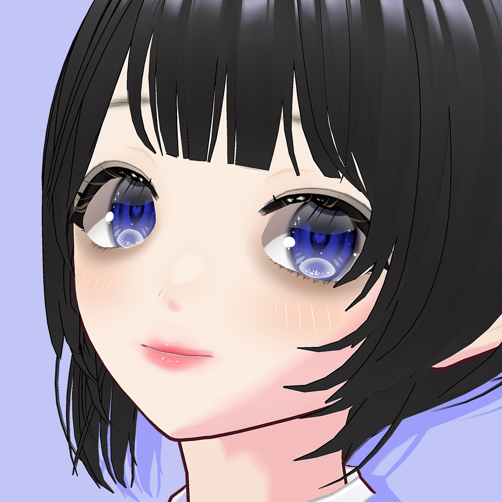

Video Creator / VOCALOID Producer
あずみの
好きなことを、そこそこに
ニコニコでいろんなことをしています。
このサイトでは、僕の制作物などを紹介しています。
このサイトは、ChatGPTの力を借りています。ご了承ください。
Latest Updates
お知らせ
- プロフィールに経歴を追加しました。
- すべて見る →

好きなことを、そこそこに
ニコニコでいろんなことをしています。
このサイトでは、僕の制作物などを紹介しています。
このサイトは、ChatGPTの力を借りています。ご了承ください。